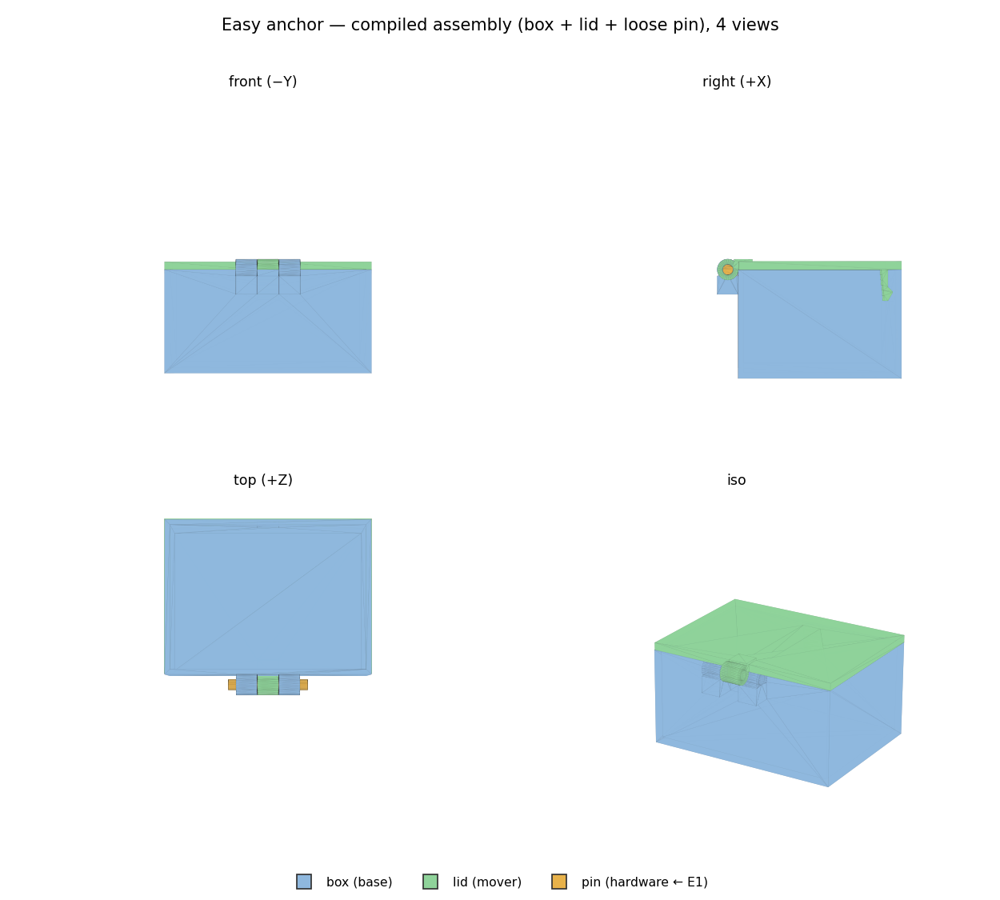
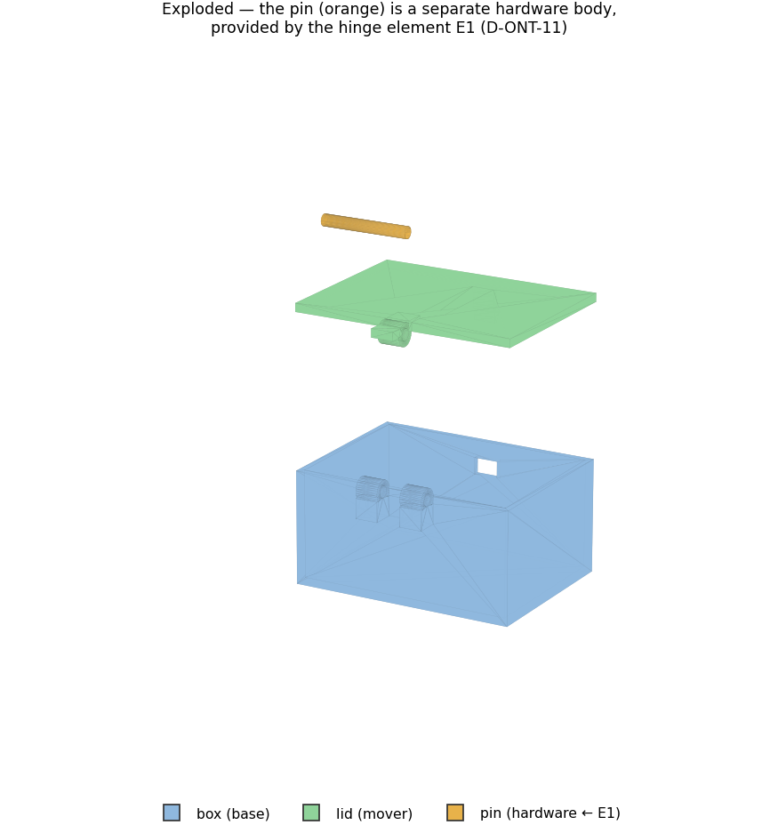
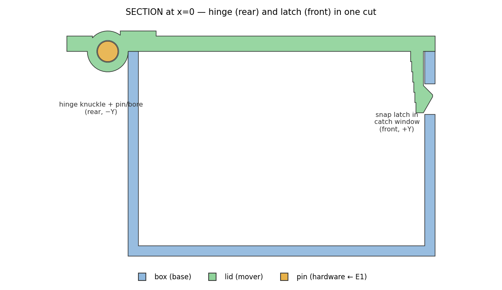
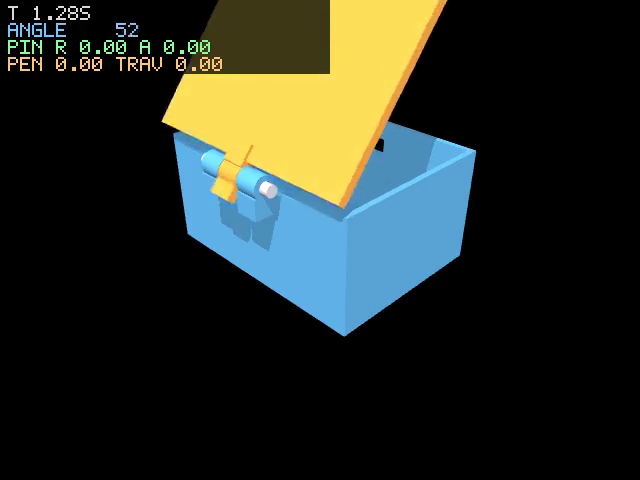
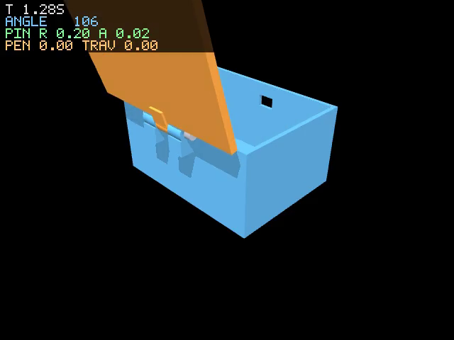
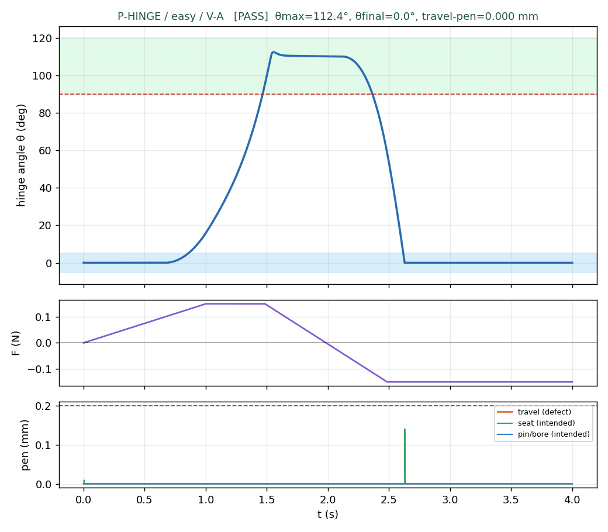
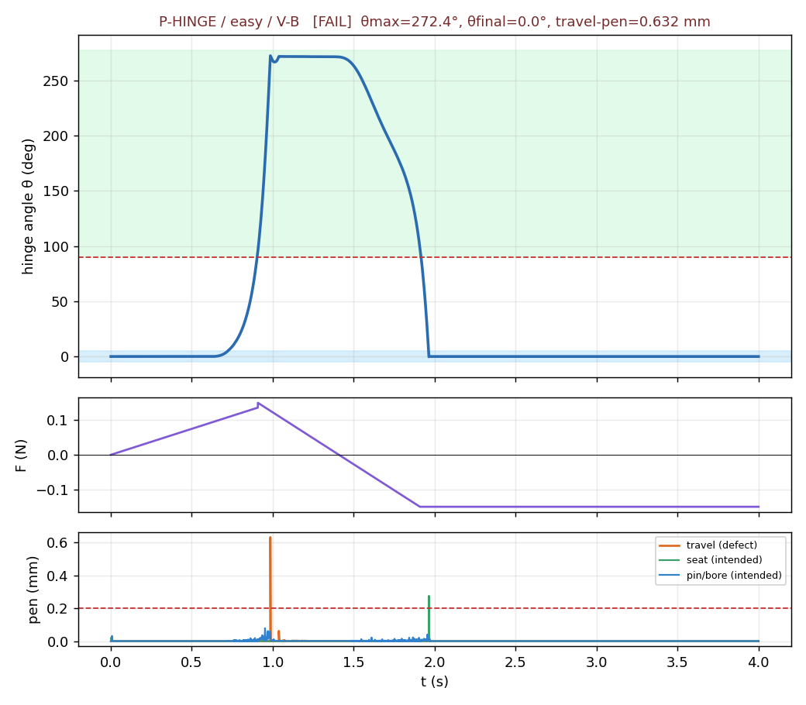
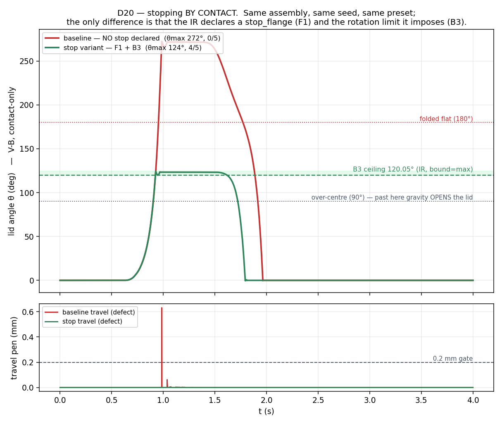
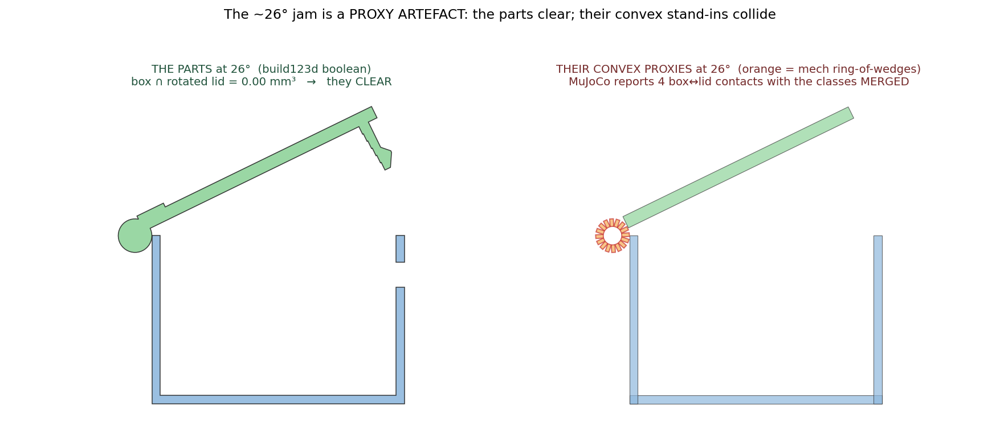

Box + lid on a formalized pin hinge, with a front snap latch; the loose pin is element-provided hardware (D-ONT-11); two first-class AssemblyRules (D-ONT-12) govern the latch sweep and the rim budget. Compiled from the IR, then verified through t0 → t1 → t2.
| ID | Decision | Citation |
|---|---|---|
| D-ONT-11 | Element-provided pieces The loose pin is a Piece with provenance='hardware', instantiated at ④ and provenance-tagged; its geometry comes from the hinge element E1's carve (pin_solid). V-07 amended: hardware exempt from binding. | MECHSYNTH §3.3 / M0 hinge |
| D-ONT-12 | AssemblyRule as a first-class entity Two typed, declarative rules on the plan: an EXCLUSION (the latch must lie outside the lid's swept volume) and a RESOURCE budget (Σ contributors ≤ budget). Provenance-tagged; referents resolve per D13. | MECHSYNTH §5.2 / Pahl&Beitz |
| D14 / COLLISION_EPS | Lid seating without a tied separating axis The moving lid's seating primitive is inset by 0.2 mm laterally so it never shares a face-plane with the static rim (the drawer lesson); the load-bearing Z plane is left exact. | M0 FINDINGS / drawer |
| D22 | Intended vs defect interference Undercut release (0–10°), the closing seat, the pin/bore interface and the open-stop impact are INTENDED contacts (observables); only non-intended travel interference gates. | your ruling / M0 B4 |
| pin_hinge card | Formalized M0 hinge (Bayer/§3.3) Ports axis/mount_A/mount_B; bounded params; carve() = knuckles+lugs+bore+chamfer+pin; collision_hint() = ring-of-wedges bore. | SNAPFIT §12 / M0 |
| snap_hook_cantilever card | Formalized Bayer cantilever Grows hooks into the lid, cuts catch windows; contributes the EXCLUSION AssemblyRule (imposes-family knowledge). | Bayer p.5 Fig.1 |
The pipeline constrains the LLM to discrete ontology choices (which cards, which ports, which rules) while deterministic code owns every dimension. The pin is not modelled as a fourth free part the planner invented — it is provided by the hinge card and tagged hardware, so its geometry and provenance trace to E1 (D-ONT-11). The latch-vs-sweep constraint is not hand-written either: it is an AssemblyRule the snap card imposes (D-ONT-12), evaluated on the compiled geometry. Physics is split into two independent questions: does the declared hinge axis carry the motion (V-A), and does the geometry alone — pin in a bored knuckle — produce the same DoF by contact (V-B)? Both must agree, or the mechanism is an artifact of the joint we declared rather than the shape we built.



| rule | kind | provenance | result | |
|---|---|---|---|---|
| AR1 | exclusion | card:snap_hook_cantilever | undercut releases by 10° (release-band peak 50 mm³, intended — D22); free sweep beyond 20° peak 0.00 mm³ → CLEARS the box | PASS |
| AR2 | resource | task | Σ(E2.L_mm+E1.edge_margin) = 39.7 <= P2.rim_length = 80.0 → ok | PASS |
AR1 is D22-aware: the rigid hook's undercut interferes with the window edge only through the 0–10° release band (intended — in reality the beam flexes out); the free sweep beyond is clean, so the latch clears the box. AR2 reads ⑤ values straight from the IR.
| element | param | IR | measured | |Δ| (mm) | |
|---|---|---|---|---|---|
| E2_snap | L | 12.0 | 12.0 | 0.0 | ok |
| E2_snap | h | 2.5 | 2.5 | 0.0 | ok |
| E2_snap | b | 8.0 | 8.0 | 0.0 | ok |
| E2_snap | y | 1.5 | 1.5 | 0.0 | ok |
| E1_hinge | pin_d | 4.0 | 4.0 | 0.0 | ok |
| E1_hinge | pin_len | 30.6 | 30.6 | 0.0 | ok |
| E1_hinge | bore_d | 4.3 | 4.3 | 0.0 | ok |
| E1_hinge | knuckle_od | 8.0 | 8.0 | 0.0 | ok |
Both elements re-measured from the compiled STEP against the resolved IR — 0.0000 mm drift. The IR reference is ⑤'s resolved value, not the compiled dims (the panel blind-spot rule).
| criterion | value | thr | |
|---|---|---|---|
| theta_max >= 90 deg | 112.41 | ≤ 90.0 | ok |
| travel interference (non-intended) <= 0.2 mm | 0.0 | ≤ 0.2 | ok |
| settles closed: theta_final <= 5 deg, no bounce-open | 2.98 | ≤ 5.0 | ok |
5/5 seeds pass. The joint IS the hinge; the ring-of-wedge collisions are skipped (they jam a convex approximation of the joint).
| criterion | value | thr | |
|---|---|---|---|
| theta_max >= 90 deg | 272.37 | ≤ 90.0 | ok |
| travel interference (non-intended) <= 0.2 mm | 0.6316 | ≤ 0.2 | FAIL |
| settles closed: theta_final <= 5 deg, no bounce-open | 2.28 | ≤ 5.0 | ok |
| pin retention: radial <= clearance+0.1 | 0.2242 | ≤ 0.4 | ok |
| pin retention: axial <= protrusion | 0.0289 | ≤ 3.0 | ok |
| pin/bore interface <= clearance | 0.0786 | ≤ 0.3 | ok |
0/5 seeds pass. The DoF emerges from the pin in the bored knuckle; a designed open-stop (the lug hard-stop) arrests it at ~107°.




Same assembly, same seed, same preset. The only difference: the stop variant's IR carries F1 (a stop_flange PassiveFeature) and the B3 rotation LIMIT it imposes (bound=max, ≤120.05°, registered per V-08), which compiles to a real flange solid on the lid. V-A passes both — only V-B separates them.
| baseline | stop variant | |
|---|---|---|
| V-B seeds | 0/5 — FAIL | 4/5 — PASS |
| θ max | 272° | 124° |
| reading | the lid folds right over — that is the finding, reported not fixed | the flange bottoms out on the box's own rear wall — arrest BY CONTACT |


| authority | tool | result at 26° |
|---|---|---|
| the PARTS | build123d boolean on compiled solids | box ∩ rotated lid = 0.0 mm³ — they clear |
| the PROXIES | MuJoCo contacts, classes MERGED | 4 box↔lid contacts (rear wall vs lid ring-wedge) |
Guard (verified, not asserted): suppression is scoped to cross-class pairs between the two NAMED intended-contact classes. The travel class is never suppressed — travel reads base↔mover seat↔seat contacts, live at every angle; the baseline fold-over's peak travel contact is P1_c1↔P2_c0 (rear wall vs lid panel), both seat-class, firing 0.99 mm at θ=272.9°. Limitation: a genuine mech↔seat interference would be invisible to the physics travel gate — covered instead at the PARTS level (t0's AR1 sweep + the boolean above).
PASS t0 AssemblyRules all PASS · t1 PASS (0 drift) · V-A 5/5 baseline + 5/5 stop · V-B 0/5 baseline (folds over — the finding) vs 4/5 stop (arrests by contact). The compiled Easy anchor opens, releases and re-seats with the pin retained; and the stop_flange variant demonstrates D20 end-to-end — V-A cannot tell the two designs apart, V-B can.
Guard trio on every verdict JSON: decision_row + compile_hash (1f2eb47) + shape assertion.